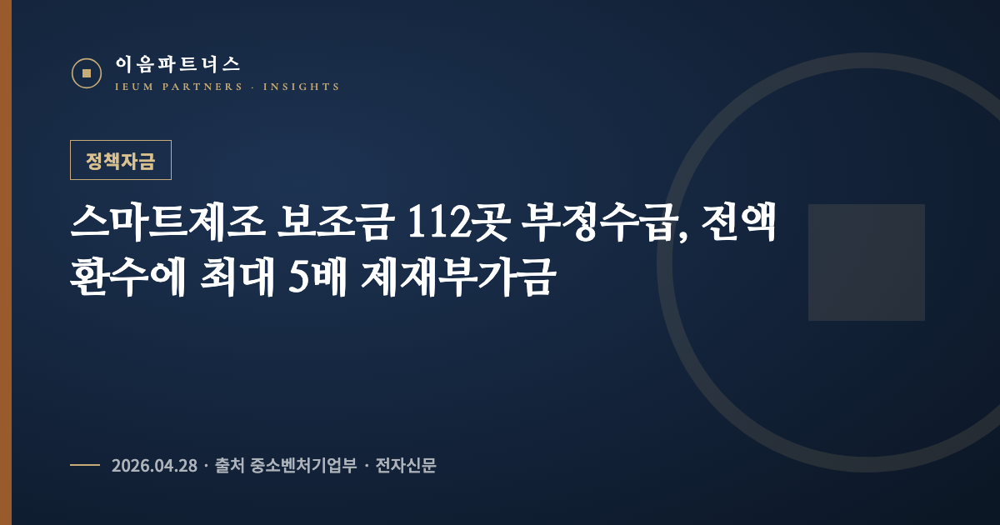

스마트제조 보조금 112곳 부정수급, 전액 환수에 최대 5배 제재부가금

중소벤처기업부가 소공인 스마트제조지원 사업의 2024년 지원기업 1,887곳을 점검한 결과, 112곳(약 6%)에서 보조금 부정수급이 확인됐습니다. 적발된 곳에는 보조금 전액 환수와 부정수급액의 최대 5배 제재부가금(부정하게 받은 돈에 더해 물리는 제재금)이 추진됩니다. 대표님 회사가 받은 지원사업의 견적·계약·정산 서류는 실제와 같으신가요? 이 글에서는 적발 유형과 제재, 회사가 확인할 것을 정리합니다.
이번 점검에서는 장비를 납품하는 공급기업이 신청서 작성부터 정산까지 사실상 대신 처리한 사례가 많았습니다. 그런데 행정 제재는 보조금을 받은 소공인 112곳을 대상으로 시작됐으니, 업체에 맡긴 사업이 있다면 지금 서류를 다시 보시길 권합니다. 지원사업 서류 점검이 필요하시면 카카오톡 채널 이음파트너스로 편하게 문의해 주세요.
무엇이 적발됐나
이 사업은 소공인(규모가 작은 제조업체)의 공정에 스마트 장비와 소프트웨어를 들이도록 돕는 사업으로, 지원 규모가 2020년 30억 원에서 2026년 980억 원으로 늘었습니다. 지원 규모가 급증하면서 관리 사각지대가 생겼고, 중기부는 2025년 11월 관계부처 합동 점검 뒤 약 5개월간 집중 조사를 벌였습니다(전자신문). 범죄 혐의가 중대한 사안은 세 유형으로 나눠 수사를 의뢰했습니다.
① 가격 부풀리기와 페이백
일부 공급기업은 장비와 소프트웨어 값을 실제보다 부풀린 뒤 그 차액 일부를 소공인에게 현금으로 돌려줬습니다. 이 유형으로 공급기업 17곳이 수사의뢰됐습니다.
② 임차로 꾸민 구매(이면계약)
이 사업은 장비 임차만 지원하는데, 임차계약서를 내고 따로 매매계약서를 쓰거나 선정 전에 산 장비로 임대차계약서를 새로 만든 사례가 나왔습니다. 공급기업 4곳과 소공인 9곳이 수사의뢰됐습니다.
③ 가동 데이터 허위 전송
장비가 돌아가는지 확인하는 데이터를 거짓으로 보낸 사례도 많았고, 이미 폐업한 사업장의 장비가 정상 가동되는 것처럼 꾸민 경우도 있었습니다. 공급기업 16곳이 수사의뢰됐습니다(중소벤처기업부 보도자료).
수사의뢰와 별개로 행정 제재를 받는 사례에는 사업계획서의 장비와 실제 설치 장비가 다른 경우, 도입한 소프트웨어를 제대로 쓰지 않은 경우, 정산 때 세금계산서를 빠뜨리거나 유효기간이 지난 견적서를 낸 경우도 다수 포함됐습니다.
제재는 어디까지 가나
중기부는 무관용 원칙을 밝히며 "부정수급액의 최대 5배까지 제재부가금을 부과해 부당이득 이상을 철저히 환수할 방침"이라고 했습니다(중소벤처기업부 보도자료). 제재 내용은 다음과 같습니다.
| 구분 | 내용 |
|---|---|
| 환수 | 부정수급액 전액 |
| 제재부가금 | 부정수급액의 최대 5배 |
| 참여 제한 | 최대 5년간 중기부 지원사업 참여 제한, 부정행위 내용 전 부처 통보 |
| 형사고발 | 공급기업 17곳·소공인 9곳(사기·보조금법 위반 혐의) |
| 추가 조사 | 2025년 지원기업 1,530곳 정밀 조사 중 |
다만 이번 발표는 제재 절차를 시작한 단계입니다. 실제로 환수가 확정된 금액은 공개되지 않았고, 수사 결과도 아직 나오지 않았습니다.
앞으로 사업은 어떻게 바뀌나
중기부는 사업도 전면 개편했습니다. 최근 3년 평균 연매출 2억 원 이상인 소공인만 신청할 수 있고, 자부담 비율은 30%에서 40%로 오릅니다. 장비 지원은 임차에서 구매 방식으로 바뀌고, 사후관리 기간도 2년에서 5년으로 늘어납니다.
신청 때는 공정 현장 영상을 내고 인터뷰를 거치며, 같은 인터넷 주소(IP)에서 여러 회사가 신청하면 대리 신청인지 따로 검증합니다. 신청은 회사가 직접 하고, 지원 여부와 금액은 각 기관 심사로 정해집니다.
대표님이 지금 확인할 것
- 지원받아 들인 장비가 사업계획서에 적힌 것과 같은지, 실제로 쓰고 있는지 확인하세요.
- 견적서·계약서·세금계산서 금액이 실제 거래와 같은지, 업체에서 되돌려 받은 돈은 없는지 살펴보세요.
- 신청과 정산을 업체에 맡겼더라도 회사 이름으로 낸 서류는 대표님이 직접 읽어 보시길 권합니다.
- 서류가 실제와 다른 점이 보이면 혼자 판단하지 말고 전문가와 대응 방향부터 상의하세요.
참고한 자료
- 소공인 스마트제조지원 사업보조금 부정수급에 대한 고강도 제재 및 제도 개편 — 중소벤처기업부 보도자료 (2026.04.28)
- 소공인 스마트제조 보조금 부정수급 ‘무더기 적발’…중기부, 환수·수사의뢰 등 강력 제재 — 전자신문 (2026.04.28)
지원사업을 진행 중이거나 신청을 앞두고 서류를 함께 점검하고 싶으시다면 카카오톡 채널 이음파트너스로 편하게 문의해 주세요.
※ 이 글은 일반적인 정보 제공을 위한 것으로, 개별 사안은 세무사·노무사 등 전문가와 함께 확인하시기 바랍니다.